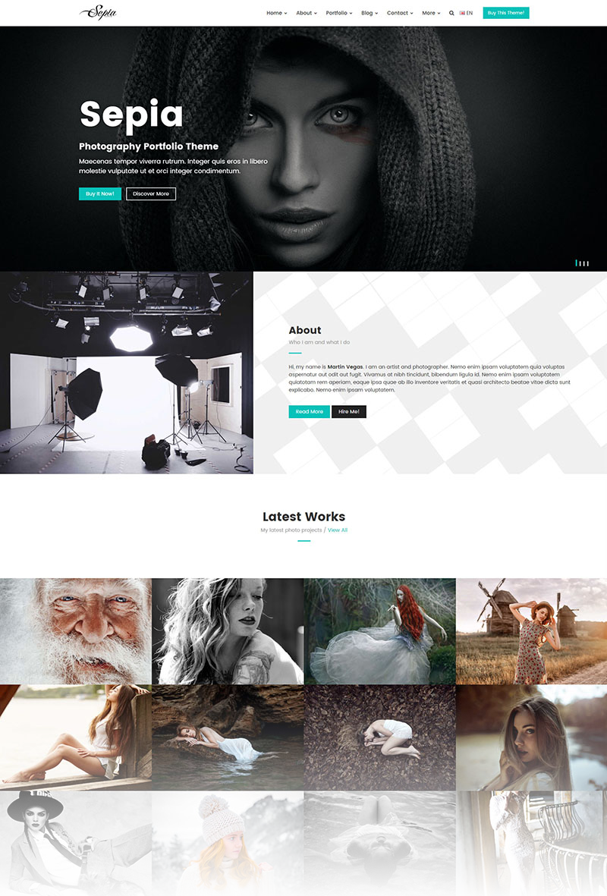
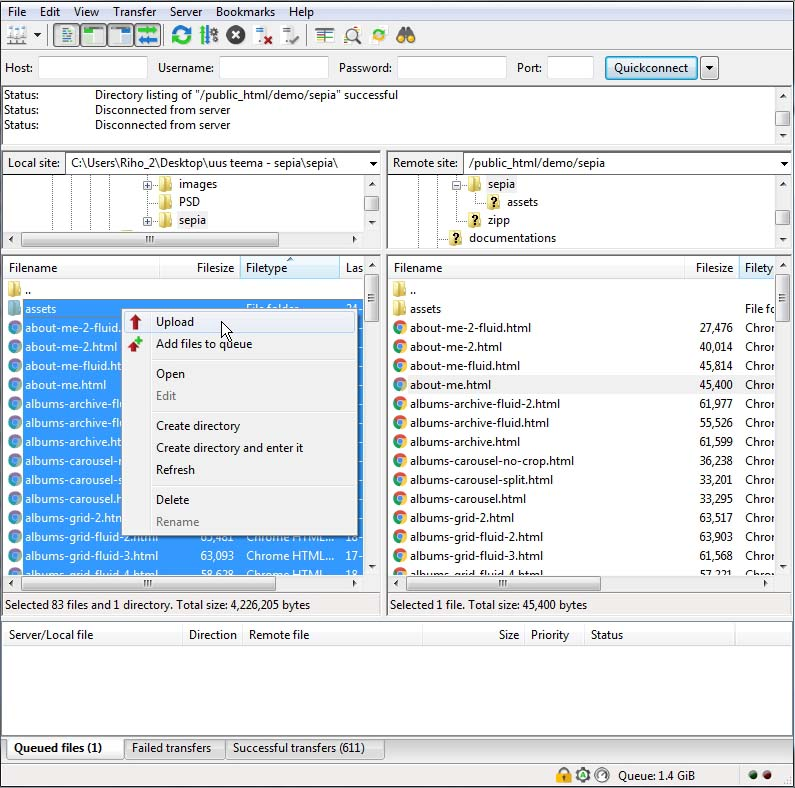

Thank you for purchasing this template. :)

This template based on Bootstrap 3 Framework. Bootstrap is the most popular HTML, CSS, and JS framework for developing responsive, mobile first projects on the web. More information: https://getbootstrap.com/docs/3.3/
This template requires that you are familiar with at least HTML and CSS. If you are not familiar with HTML and CSS, I highly recommend that you to hire a specialist. It will save your time and you will get only positive emotions while using this product.
It is also required that you are familiar with Bootstrap 3. If not, then it is strongly recommended that you will familiarize yourself with how the Bootstrap 3 works before you begin to customize this template.
Sepia - is a simple HTML template. HTML is static, this means no dynamic features (no PHP and MySQL). This template is just a good starting point if you want to create your own web site contains mainly the design elements you can use.
* Some parts may not work properly in your local computer. Upload template to your web server in order to function properly!
All template files are located in folder named "UPLOAD".
+-- sepia / +-- assets / ¦ +-- css / ¦ ¦ +-- color-skins / ¦ ¦ ¦ +-- ...all color skins CSS ¦ ¦ +-- rtl / ¦ ¦ ¦ +-- helper-rtl.css (template helper RTL CSS) ¦ ¦ ¦ +-- theme-rtl.css (template RTL CSS) ¦ ¦ ¦ ¦ ¦ +-- dark-style.css (template dark style) ¦ ¦ +-- helper.css (helper CSS classes) ¦ ¦ +-- theme.css (template master CSS) ¦ +-- img / ¦ ¦ +-- ...all images used ¦ +-- js / ¦ ¦ +-- theme.js (template JS) ¦ +-- vendor / ¦ ¦ +-- bootstrap (all Bootstrap files) ¦ ¦ +-- ...all external scripts/plugins ¦ +-- favicon.ico +-- mail.php +-- index.html +-- about-me.html +-- about-me-2.html +-- ...all .html files
Simply upload all template files (can be found in "UPLOAD" folder) to your server using your favorite FTP client (I recommend FileZilla). Once uploaded, point your browser to your site URL and you are done. No any hocus-pocus. :)

This template based on Bootstrap 3 Framework. Bootstrap is the most popular HTML, CSS, and JS framework for developing responsive, mobile first projects on the web. More information: https://getbootstrap.com/docs/3.3/
<div class="row">
<div class="col-md-8">.col-md-8</div>
<div class="col-md-4">.col-md-4</div>
</div>
<div class="row">
<div class="col-md-4">.col-md-4</div>
<div class="col-md-4">.col-md-4</div>
<div class="col-md-4">.col-md-4</div>
</div>
<div class="row">
<div class="col-md-6">.col-md-6</div>
<div class="col-md-6">.col-md-6</div>
</div>
More information about Bootstrap 3 grid system: https://getbootstrap.com/docs/3.3/css/#grid
<!-- =========== ///// Body ///// ================ * Use class "animsition" to enable page transition while page loads. * Use class "tt-boxed" to enable page boxed layout globally (affects all elements containing class "tt-wrap"). * Use class "tt-dark-style" to enable theme dark style. --> <body id="body" class="animsition tt-boxed"> <!-- ================= //// Begin header //// ====================== * Use class "header-show-hide-on-scroll" to hide header on scroll down and show on scroll up. * Use class "header-fixed-top" to set header to fixed position. * Use class "header-transparent" to set header to transparent. * Use class "menu-align-left" to align menu to left. * Use class "menu-align-right" to align menu to right. * Use class "menu-align-center" to align menu to center (do not use with header classes!). --> <header id="header" class="menu-align-right"> <!-- Begin header inner --> <div class="header-inner tt-wrap"> <!-- add/remove class "tt-wrap" to enable/disable element boxed layout (class "tt-boxed" is required in <body> tag! ) --> <!-- Begin logo ================ --> <div id="logo"> <a href="index.html" class="logo-dark"><img src="assets/img/logo-dark.png" alt="logo"></a> <a href="index.html" class="logo-light"><img src="assets/img/logo-light.png" alt="logo"></a> <!-- for small screens --> <a href="index.html" class="logo-dark-m"><img src="assets/img/logo-dark-m.png" alt="logo"></a> <a href="index.html" class="logo-light-m"><img src="assets/img/logo-light-m.png" alt="logo"></a> </div> <!-- End logo --> <!-- ==================== //// Begin main menu //// ===================== --> <nav class="tt-main-menu"> <!-- Begin mobile menu toggle button --> <div id="tt-m-menu-toggle-btn"> <span></span> </div> <!-- End mobile menu toggle button --> <!-- Begin menu tools ====================== --> <div class="tt-menu-tools"> <ul> <!-- Begin search --> <li> <a href="#" class="tt-clobal-search-trigger"><i class="fa fa-search"></i></a> <div class="tt-clobal-search"> <div class="tt-clobal-search-inner"> <span class="tt-clobal-search-title">Search</span> <form id="tt-clobal-search-form" class="form-btn-inside" method="get" action="search-results.html"> <input type="text" id="tt-clobal-search-input" name="search" placeholder="Type your keywords ..."> <button type="submit"><i class="fa fa-search"></i></button> </form> </div> <!-- /.tt-clobal-search-inner --> <div class="tt-clobal-search-close"><i class="tt-close-btn tt-close-light"></i></div> </div> <!-- /.tt-clobal-search --> </li> <!-- End search --> <!-- Begin tt-dropdown (languages) =================================== * Use class "tt-dropdown-dark" to enable dropdown dark style. --> <li class="tt-dropdown-wrap tt-dropdown-master tt-dropdown-dark tt-dropdown-right tt-tools-lang"> <a href="#0"><img src="assets/img/flags/gb.png" alt="English"> EN</a> <ul class="tt-dropdown"> <li><a href="" title="English"><img src="assets/img/flags/gb.png" alt="English"> EN</a></li> <li><a href="" title="French"><img src="assets/img/flags/fr.png" alt="French"> FR</a></li> <li><a href="" title="Deutsch"><img src="assets/img/flags/de.png" alt="Deutsch"> DE</a></li> </ul> <!-- /.tt-dropdown --> </li> <!-- End tt-dropdown --> <!-- Begin call to action button --> <li> <a href="https://themeforest.net/user/themetorium/portfolio" class="tt-tools-button" target="_blank">Buy<span class="hide-from-sm"> This Theme</span>!</a> </li> <!-- End call to action button --> </ul> </div> <!-- End menu tools --> <!-- Collect the nav links for toggling ======================================== * Use class "tt-submenu-dark" to enable submenu dark style. --> <div class="tt-menu-collapse tt-submenu-dark"> <ul class="tt-menu-nav"> <!-- Begin submenu (submenu master) ==================================== --> <li class="tt-submenu-wrap tt-submenu-master"> <a href="#0">Home</a> <ul class="tt-submenu"> <li><a href="home-landing.html">Home Landing</a></li> <li><a href="home-intro-slideshow.html">Slideshow</a></li> <li><a href="albums-slideshow.html">Slideshow + Thumb.</a></li> <li><a href="home-intro-full-screen.html">Full Screen Slideshow</a></li> <li><a href="categories-carousel.html">Categories Carousel</a></li> <li><a href="home-intro-image.html">Static Image Intro</a></li> <li><a href="home-intro-video.html">Video Intro</a></li> <li><a href="home-intro-video-full-screen.html">Full Screen Video Intro</a></li> </ul> <!-- /.tt-submenu --> </li> <!-- End submenu (sub-master) --> <!-- Begin submenu (submenu master) ==================================== --> <li class="tt-submenu-wrap tt-submenu-master"> <a href="#0">About</a> <ul class="tt-submenu"> <li><a href="about-me.html">About Me</a></li> <li><a href="about-me-fluid.html">About Me Fluid</a></li> <li><a href="about-me-2.html">About Me 2</a></li> <li><a href="about-me-2-fluid.html">About Me 2 Fluid</a></li> </ul> <!-- /.tt-submenu --> </li> <!-- End submenu (sub-master) --> <!-- Begin submenu (submenu master) ==================================== --> <li class="tt-submenu-wrap tt-submenu-master"> <a href="#0">Portfolio</a> <ul class="tt-submenu"> <!-- Begin submenu =================== --> <li class="tt-submenu-wrap"> <a href="#0">Albums</a> <ul class="tt-submenu"> <!-- Begin submenu =================== --> <li class="tt-submenu-wrap"> <a href="#0">Grid</a> <ul class="tt-submenu"> <li><a href="albums-grid.html">Grid Default</a></li> <li><a href="albums-grid-2.html">Grid 2</a></li> <li><a href="albums-grid-fluid.html">Grid Fluid</a></li> <li><a href="albums-grid-fluid-2.html">Grid Fluid 2</a></li> <li><a href="albums-grid-fluid-3.html">Grid Fluid 3</a></li> <li><a href="albums-grid-fluid-4.html">Grid Fluid 4</a></li> <li><a href="albums-grid-no-crop.html">Grid No Crop</a></li> <li><a href="albums-grid-simple.html">Grid Simple</a></li> <li><a href="albums-grid-styles.html">Grid Item Styles</a></li> </ul> <!-- /.tt-submenu --> </li> <!-- End submenu --> <!-- Begin submenu =================== --> <li class="tt-submenu-wrap"> <a href="#0">Carousel</a> <ul class="tt-submenu"> <li><a href="albums-carousel.html">Albums Carousel</a></li> <li><a href="albums-carousel-no-crop.html">Carousel No Crop</a></li> <li><a href="albums-carousel-split.html">Carousel Split</a></li> </ul> <!-- /.tt-submenu --> </li> <!-- End submenu --> <!-- Begin submenu =================== --> <li class="tt-submenu-wrap"> <a href="#0">Archive</a> <ul class="tt-submenu"> <li><a href="albums-archive.html">Archive Default</a></li> <li><a href="albums-archive-fluid.html">Archive Fluid</a></li> <li><a href="albums-archive-fluid-2.html">Archive Fluid 2</a></li> </ul> <!-- /.tt-submenu --> </li> <!-- End submenu --> <li><a href="albums-horizontal-scroll.html">Horizontal Scroll</a></li> <li><a href="albums-one-column.html">One Column</a></li> <li><a href="albums-one-column-fluid.html">One Column Fluid</a></li> <li><a href="albums-slideshow.html">Slideshow + Thumb.</a></li> <li><a href="albums-thumbnails-list.html">Thumbnails List</a></li> </ul> <!-- /.tt-submenu --> </li> <!-- End submenu --> <!-- Begin submenu =================== --> <li class="tt-submenu-wrap"> <a href="#0">Gallery</a> <ul class="tt-submenu"> <!-- Begin submenu =================== --> <li class="tt-submenu-wrap"> <a href="#0">Gallery Carousel</a> <ul class="tt-submenu"> <li><a href="gallery-single-carousel.html">Carousel Default</a></li> <li><a href="gallery-single-carousel-2.html">Carousel + Info</a></li> <li><a href="gallery-single-carousel-center.html">Carousel Center</a></li> </ul> <!-- /.tt-submenu --> </li> <!-- End submenu --> <!-- Begin submenu =================== --> <li class="tt-submenu-wrap"> <a href="#0">Gallery Grid</a> <ul class="tt-submenu"> <li><a href="gallery-single-grid.html">Grid Default</a></li> <li><a href="gallery-single-grid-2.html">Grid 2</a></li> <li><a href="gallery-single-grid-cropped.html">Grid Cropped</a></li> <li><a href="gallery-single-grid-fluid.html">Grid Fluid</a></li> <li><a href="gallery-single-grid-fluid-2.html">Grid Fluid 2</a></li> <li><a href="gallery-single-grid-fluid-2-cropped.html">Grid Fluid 2 Cropped</a></li> <li><a href="gallery-single-grid-fluid-3.html">Grid Fluid 3</a></li> <li><a href="gallery-single-grid-fluid-3-cropped.html">Grid Fluid 3 Cropped</a></li> <li><a href="gallery-single-grid-simple.html">Grid Simple</a></li> </ul> <!-- /.tt-submenu --> </li> <!-- End submenu --> <!-- Begin submenu =================== --> <li class="tt-submenu-wrap"> <a href="#0">Gallery + Sidebar</a> <ul class="tt-submenu"> <li><a href="gallery-single-sidebar-left.html">Sidebar Left</a></li> <li><a href="gallery-single-sidebar-left-simple.html">Sidebar Left Simple</a></li> <li><a href="gallery-single-sidebar-right.html">Sidebar Right</a></li> <li><a href="gallery-single-sidebar-right-simple.html">Sidebar Right Simple</a></li> </ul> <!-- /.tt-submenu --> </li> <!-- End submenu --> <!-- Begin submenu =================== --> <li class="tt-submenu-wrap"> <a href="#0">Gallery Styles</a> <ul class="tt-submenu"> <li><a href="gallery-single-grid-style-default.html">Default</a></li> <li><a href="gallery-single-grid-style-colored.html">Colored</a></li> <li><a href="gallery-single-grid-style-zoom-only.html">Zoom Only</a></li> </ul> <!-- /.tt-submenu --> </li> <!-- End submenu --> </ul> <!-- /.tt-submenu --> </li> <!-- End submenu --> <!-- Begin submenu =================== --> <li class="tt-submenu-wrap"> <a href="#0">Categories</a> <ul class="tt-submenu"> <li><a href="categories-carousel.html">Carousel</a></li> <li><a href="categories-grid.html">Grid</a></li> <li><a href="categories-grid-fluid.html">Grid Fluid</a></li> <li><a href="categories-grid-fluid-2.html">Grid Fluid 2</a></li> <li><a href="categories-grid-fluid-3.html">Grid Fluid 3</a></li> </ul> <!-- /.tt-submenu --> </li> <!-- End submenu --> </ul> <!-- /.tt-submenu --> </li> <!-- End submenu (sub-master) --> <!-- Begin submenu (submenu master) ==================================== --> <li class="tt-submenu-wrap tt-submenu-master"> <a href="#0">Blog</a> <ul class="tt-submenu"> <!-- Begin submenu =================== --> <li class="tt-submenu-wrap"> <a href="#0">Blog List</a> <ul class="tt-submenu"> <li><a href="blog-list-classic.html">Classic</a></li> <li><a href="blog-list-simple.html">Classic Simple</a></li> <li><a href="blog-list-grid.html">Grid</a></li> <li><a href="blog-list-grid-fluid.html">Grid Fluid</a></li> <li><a href="blog-list-grid-no-sidebar.html">Grid No Sidebar</a></li> </ul> <!-- /.tt-submenu --> </li> <!-- End submenu --> <!-- Begin submenu =================== --> <li class="tt-submenu-wrap"> <a href="#0">Blog Single Post</a> <ul class="tt-submenu"> <li><a href="blog-single.html">Default</a></li> <li><a href="blog-single-alter.html">Alternate</a></li> <li><a href="blog-single-simple.html">Simple</a></li> </ul> <!-- /.tt-submenu --> </li> <!-- End submenu --> <!-- Begin submenu =================== --> <li class="tt-submenu-wrap"> <a href="#0">Blog Archive</a> <ul class="tt-submenu"> <li><a href="blog-archive.html">Archive Default</a></li> <li><a href="blog-archive-2.html">Archive Classic</a></li> <li><a href="blog-archive-3.html">Archive Grid</a></li> </ul> <!-- /.tt-submenu --> </li> <!-- End submenu --> </ul> <!-- /.tt-submenu --> </li> <!-- End submenu (sub-master) --> <!-- Begin submenu (submenu master) ==================================== --> <li class="tt-submenu-wrap tt-submenu-master"> <a href="#0">Contact</a> <ul class="tt-submenu"> <li><a href="contact.html">Contact Default</a></li> <li><a href="contact-fluid.html">Contact Fluid</a></li> <li><a href="contact-simple.html">Contact Simple</a></li> </ul> <!-- /.tt-submenu --> </li> <!-- End submenu (sub-master) --> <!-- Begin submenu (submenu master) ==================================== --> <li class="tt-submenu-wrap tt-submenu-master"> <a href="#0">More</a> <ul class="tt-submenu"> <!-- Begin submenu =================== --> <li class="tt-submenu-wrap"> <a href="#0">Dummy Pages</a> <ul class="tt-submenu"> <li><a href="page-dummy-classic.html">No Sidebar</a></li> <li><a href="page-dummy-classic-sidebar-left.html">Sidebar Left</a></li> <li><a href="page-dummy-classic-sidebar-right.html">Sidebar Right</a></li> <li><a href="page-dummy-modern.html">Modern</a></li> </ul> <!-- /.tt-submenu --> </li> <!-- End submenu --> <li><a href="page-404.html">404 Error</a></li> <li><a href="page-404-2.html">404 Error 2</a></li> <li><a href="page-faq.html">FAQ</a></li> <li><a href="page-pricing.html">Pricing</a></li> <li><a href="search-results.html">Search Results</a></li> <li><a href="page-password.html">Password Protected</a></li> <li><a href="footer-styles.html">Footer Styles</a></li> </ul> <!-- /.tt-submenu --> </li> <!-- End submenu (sub-master) --> </ul> <!-- /.tt-menu-nav --> </div> <!-- /.tt-menu-collapse --> </nav> <!-- End main menu --> </div> <!-- End header inner --> </header> <!-- End header --> <!-- ************************************* *********** Begin body content *********** ************************************** --> <div id="body-content"> <!-- ======================== ///// Begin page header ///// ============================= * Use classes "ph-xs", "ph-sm", "ph-lg" or "ph-xlg" to set page header size. * Use class "ph-center" or "ph-right" to align page header caption. --> <section id="page-header" class="ph-lg"> <!-- Begin page header image ============================= * Use class "parallax-bg-1" up to "parallax-bg-6" to enable background image parallax effect. * Use class "fade-out-scroll-3" to enable fade out effect if page scroll. * Use class "hide-ph-image" to hide page header image without removing the code. --> <div class="page-header-image parallax-bg-3 bg-image" style="background-image: url(assets/img/misc/page-header-bg-4.jpg);"> <!-- Element cover =================== * You can use prepared background transparent classes depends on brightness of your page header image. More info: file "helper.css". --> <div class="cover bg-transparent-5-dark"></div> </div> <!-- End page header image --> <!-- Begin page header inner --> <div class="page-header-inner tt-wrap"> <!-- Begin page header caption =============================== * Use classes "ph-caption-xs", "ph-caption-sm", "ph-caption-lg" or "ph-caption-xlg" to set page header size. * Use class "parallax-1" up to "parallax-6" to enable parallax effect. * Use class "fade-out-scroll-1" up to "fade-out-scroll-6" to enable fade out effect if page scroll. --> <div class="page-header-caption ph-caption-lg parallax-4 fade-out-scroll-3"> <h1 class="page-header-title">Page Header Title</h1> <hr class="hr-short"> <div class="page-header-description"> <p>Fusce imperdiet, arcu non tempor aliquam, justo tortor cursus est, sed facilisis eros purus et felis. Sed eros sapien, iaculis eget gravida euismod, dapibus vitae turpis. Pellentesque men egestas odio mi, vitae egestas massa elementum.</p> </div> </div> <!-- End page header caption --> </div> <!-- End page header inner --> </section> <!-- End page header --> <!-- ===================================== ///// Begin whatever content section ///// ====================================== --> <section id="your-section-id" class="some-extra-class-maybe"> <div class="your-section-inner tt-wrap"> <!-- add/remove class "tt-wrap" to enable/disable element boxed layout (class "tt-boxed" is required in <body> tag! ) --> Your section content here... </div> <!-- /.your-section-inner --> </section> <!-- End whatever content section --> <!-- =========================== ///// Begin footer section ///// ================================ * Use class "footer-dark" to enable dark footer. * Use class "no-margin-top" if needed. --> <section id="footer" class="footer-dark"> <div class="footer-inner"> <div class="footer-container tt-wrap"> <div class="row"> <div class="col-md-3"> <!-- Begin footer logo --> <div id="footer-logo"> <a href="index.html" class="logo-dark"><img src="assets/img/logo-dark.png" alt="logo"></a> <a href="index.html" class="logo-light"><img src="assets/img/logo-light.png" alt="logo"></a> <!-- for small screens --> <a href="index.html" class="logo-dark-m"><img src="assets/img/logo-dark-m.png" alt="logo"></a> <a href="index.html" class="logo-light-m"><img src="assets/img/logo-light-m.png" alt="logo"></a> </div> <!-- End footer logo --> </div> <!-- /.col --> <div class="col-md-5"> <!-- Begin footer text --> <div class="footer-text"> <h4>- Creative Photo Studio</h4> Sed non auctor magna. Nunc eu ultrices orci. Donec commodo ligula in massa ultricies volutpat. Fusce vel cursus lectus. Cras commodo odio mi, eu cursus nibh iaculis ut. </div> <!-- End footer text --> </div> <!-- /.col --> <div class="col-md-4"> <!-- Begin social buttons --> <div class="social-buttons"> <ul> <li><a href="https://www.facebook.com/themetorium" class="btn btn-social-min btn-default btn-rounded-full" title="Follow me on Facebook" target="_blank"><i class="fa fa-facebook"></i></a></li> <li><a href="https://twitter.com/Themetorium" class="btn btn-social-min btn-default btn-rounded-full" title="Follow me on Twitter" target="_blank"><i class="fa fa-twitter"></i></a></li> <li><a href="https://plus.google.com/+SiiliOnu" class="btn btn-social-min btn-default btn-rounded-full" title="Follow me on Google+" target="_blank"><i class="fa fa-google-plus"></i></a></li> <li><a href="https://www.pinterest.com/themetorium" class="btn btn-social-min btn-default btn-rounded-full" title="Follow me on Pinterest" target="_blank"><i class="fa fa-pinterest"></i></a></li> <li><a href="https://dribbble.com/Themetorium" class="btn btn-social-min btn-default btn-rounded-full" title="Follow me on Dribbble" target="_blank"><i class="fa fa-dribbble"></i></a></li> <li><a href="contact.html" class="btn btn-social-min btn-default btn-rounded-full" title="Drop me a line" target="_blank"><i class="fa fa-envelope"></i></a></li> </ul> </div> <!-- End social buttons --> <!-- Begin footer subscribe form --> <form id="footer-subscribe-form" class="form-btn-inside"> <div class="form-group"> <input type="email" class="form-control no-bg" id="footer-subscribe" name="subscribe" placeholder="Subscribe. Enter your email address..." required=""> <button type="submit"><i class="fa fa-paper-plane"></i></button> </div> </form> <!-- End footer subscribe form --> </div> <!-- /.col --> </div> <!-- /.row --> </div> <!-- /.footer-container --> <div class="footer-bottom"> <div class="footer-container tt-wrap"> <div class="row"> <div class="col-md-6 col-md-push-6"> <!-- Begin footer menu --> <ul class="footer-menu"> <li><a href="index.html">Home</a></li> <li><a href="about-me.html">About</a></li> <li><a href="albums-grid-fluid-2.html">Portfolio</a></li> <li><a href="blog-list-grid.html">Blog</a></li> <li><a href="page-faq.html">FAQ</a></li> <li><a href="contact.html">Contact</a></li> </ul> <!-- End footer menu --> </div> <!-- /.col --> <div class="col-md-6 col-md-pull-6"> <!-- Begin footer copyright --> <div class="footer-copyright"> <p>© Sepia 2017 / All rights reserved</p> <p>Design by: <a href="https://themeforest.net/user/themetorium/portfolio?ref=Themetorium" target="_blank">Themetorium</a></p> </div> <!-- End footer copyright --> </div> <!-- /.col --> </div> <!-- /.row --> </div> <!-- /.footer-container --> </div> <!-- /.footer-bottom --> </div> <!-- /.footer-inner --> <!-- Scroll to top button --> <a href="#body" class="scrolltotop sm-scroll" title="Scroll to top"><i class="fa fa-chevron-up"></i></a> </section> <!-- End footer section --> </div> <!-- End body content --> <!-- ==================== ///// Scripts below ///// ===================== --> All template scripts JS here... <!--============================== ///// Begin Google Analytics ///// ============================== --> <!-- Paste your Google Analytics code here. Go to http://www.google.com/analytics/ for more information. --> <!--============================== ///// End Google Analytics ///// ============================== -->
jQuery - is a fast, small, and feature-rich JavaScript library. It makes things like HTML document traversal and manipulation, event handling, animation, and Ajax much simpler with an easy-to-use API that works across a multitude of browsers. With a combination of versatility and extensibility, jQuery has changed the way that millions of people write JavaScript. For more information: http://www.jquery.com
Note: The initialization of the elements, libs and features is made by the file named "theme.js" which is located in the folder named "js".
This template contains some extra prepared helper classes you can use. All helper classes are located in the file "helper.css". You are free to use these classes to customize your web site.
To enable template dark style proceed as follows:
1) In <head> section on your template HTML files find:
<!-- Template dark style CSS (just uncomment line below to enable dark style) --> <!-- <link rel="stylesheet" href="assets/css/dark-style.css"> -->
2) Just uncomment line below to enable template dark style:
<!-- <link rel="stylesheet" href="assets/css/dark-style.css"> -->
Example:
<!-- Template dark style CSS (just uncomment line below to enable dark style) --> <link rel="stylesheet" href="assets/css/dark-style.css">
To enable template color skins proceed as follows:
1) In <head> section on your template HTML files find:
<!-- Template color skins CSS (just uncomment line below to enable color skin. One line at a time!) --> <!-- <link rel="stylesheet" href="assets/css/color-skins/skin-red.css"> --> <!-- <link rel="stylesheet" href="assets/css/color-skins/skin-green.css"> --> <!-- <link rel="stylesheet" href="assets/css/color-skins/skin-blue.css"> --> <!-- <link rel="stylesheet" href="assets/css/color-skins/skin-orange.css"> --> <!-- <link rel="stylesheet" href="assets/css/color-skins/skin-purple.css"> --> <!-- <link rel="stylesheet" href="assets/css/color-skins/skin-pink.css"> --> <!-- <link rel="stylesheet" href="assets/css/color-skins/skin-brown.css"> -->
2) Just uncomment one line below to enable template color skin:
<!-- <link rel="stylesheet" href="assets/css/color-skins/skin-red.css"> --> <!-- <link rel="stylesheet" href="assets/css/color-skins/skin-green.css"> --> <!-- <link rel="stylesheet" href="assets/css/color-skins/skin-blue.css"> --> <!-- <link rel="stylesheet" href="assets/css/color-skins/skin-orange.css"> --> <!-- <link rel="stylesheet" href="assets/css/color-skins/skin-purple.css"> --> <!-- <link rel="stylesheet" href="assets/css/color-skins/skin-pink.css"> --> <!-- <link rel="stylesheet" href="assets/css/color-skins/skin-brown.css"> -->
Example:
<!-- Template color skins CSS (just uncomment line below to enable color skin. One line at a time!) --> <!-- <link rel="stylesheet" href="assets/css/color-skins/skin-red.css"> --> <!-- <link rel="stylesheet" href="assets/css/color-skins/skin-green.css"> --> <link rel="stylesheet" href="assets/css/color-skins/skin-blue.css"> <!-- <link rel="stylesheet" href="assets/css/color-skins/skin-orange.css"> --> <!-- <link rel="stylesheet" href="assets/css/color-skins/skin-purple.css"> --> <!-- <link rel="stylesheet" href="assets/css/color-skins/skin-pink.css"> --> <!-- <link rel="stylesheet" href="assets/css/color-skins/skin-brown.css"> -->
To enable template round style proceed as follows:
1) In <head> section on your template HTML files find:
<!-- Template round style CSS (just uncomment line below to enable round style) --> <!-- <link rel="stylesheet" href="assets/css/round-style.css"> -->
2) Just uncomment line below to enable template round style:
<!-- <link rel="stylesheet" href="assets/css/round-style.css"> -->
Example:
<!-- Template round style CSS (just uncomment line below to enable round style) --> <link rel="stylesheet" href="assets/css/round-style.css">
To enable template RTL mode proceed as follows:
1) In <head> section on your template HTML files find:
<!-- Template RTL mode CSS (just uncomment all 3 lines below to enable right to left mode) --> <!-- <link rel="stylesheet" href="assets/vendor/bootstrap/css/bootstrap-rtl/bootstrap-rtl.min.css"> --> <!-- <link rel="stylesheet" href="assets/css/rtl/theme-rtl.css"> --> <!-- <link rel="stylesheet" href="assets/css/rtl/helper-rtl.css"> -->
2) Just uncomment all lines below to enable template RTL mode:
<!-- <link rel="stylesheet" href="assets/vendor/bootstrap/css/bootstrap-rtl/bootstrap-rtl.min.css"> --> <!-- <link rel="stylesheet" href="assets/css/rtl/theme-rtl.css"> --> <!-- <link rel="stylesheet" href="assets/css/rtl/helper-rtl.css"> -->
Example:
<!-- Template RTL mode CSS (just uncomment all 3 lines below to enable right to left mode) --> <link rel="stylesheet" href="assets/vendor/bootstrap/css/bootstrap-rtl/bootstrap-rtl.min.css"> <link rel="stylesheet" href="assets/css/rtl/theme-rtl.css"> <link rel="stylesheet" href="assets/css/rtl/helper-rtl.css">
Touch enabled jQuery plugin that lets you create beautiful responsive carousel sliders.
<!-- Begin content carousel (http://www.owlcarousel.owlgraphic.com) ==================================================================== * Use class "nav-outside" for outside nav (requires boxed layout). * Use class "nav-outside-top" for outside top nav (requires enough space at the top of the carousel). * Use class "nav-bottom-right" for bottom right nav. * Use class "nav-rounded" for rounded nav. * Use class "nav-light" to enable nav light style. * Use class "dots-outside" for outside dots (requires enough space at the bottom of the carousel). * Use class "dots-left", "dots-right" or "dots-center-right" to align dots. * Use class "dots-rounded" for rounded dots. * Use class "owl-mousewheel" to enable mousewheel support. * Use class "cursor-grab" to enable cursor grab icon (no effect on links!). * Use class "cc-hover-light", "cc-hover-dark" or "cc-hover-zoom" to enable carousel items hover effect. * Use class "cc-height-1", "cc-height-2", "cc-height-3", "cc-height-4", "cc-height-5", "cc-height-6" or "cc-height-full" to set carousel height (do not use with data-autoheight="true"!!!). * Use class "cc-height-m" to set full height for small screens (do not use with data-autoheight="true"!!!). ================================================================ * Available carousel data attributes: data-items="5".......................(items visible on desktop) data-tablet-landscape="4"............(items visible on mobiles) data-tablet-portrait="3".............(items visible on mobiles) data-mobile-landscape="2"............(items visible on tablets) data-mobile-portrait="1".............(items visible on tablets) data-loop="true".....................(true/false) data-margin="10".....................(space between items) data-center="true"...................(true/false) data-start-position="0"..............(item start position) data-animate-in="fadeIn".............(more animations: http://daneden.github.io/animate.css/) data-animate-out="fadeOut"...........(more animations: http://daneden.github.io/animate.css/) data-mouse-drag="false"..............(true/false) data-touch-drag="false"..............(true/false) data-autoheight="true"...............(true/false) data-autoplay="true".................(true/false) data-autoplay-timeout="5000".........(milliseconds) data-autoplay-hover-pause="true".....(true/false) data-autoplay-speed="800"............(milliseconds) data-drag-end-speed="800"............(milliseconds) data-nav="true"......................(true/false) data-nav-speed="800".................(milliseconds) data-dots="false"....................(true/false) data-dots-speed="800"................(milliseconds) --> <div class="owl-carousel" data-items="1" data-nav="true"> <!-- Begin carousel item ========================= --> <div class="cc-item"> your content here... </div> <!-- End carousel item --> <!-- Begin carousel item ========================= --> <div class="cc-item"> your content here... </div> <!-- End carousel item --> <!-- Begin carousel item ========================= --> <div class="cc-item"> your content here... </div> <!-- End carousel item --> </div> <!-- End content carousel -->
Note: Content Carousel based on popular OWL Carousel. More information about OWL Carousel: http://www.owlcarousel.owlgraphic.com
An open source jQuery component to easily build your custom Youtube player or to use a Youtube video as background for your page.
<!-- Begin YTPlayer (Youtube video background)
===============================================
* NOTE: Replace videoURL with your own (videoURL:'your-youtube-video-URL').
* Do not forget to add your background image for mobile devices (because the video background doesn't work on mobile devices).
* YTPlayer may not work in the local computer. It works properly only if used under a web server.
* More info about YTPlayer: https://github.com/pupunzi/jquery.mb.YTPlayer
-->
<div class="youtube-bg-wrap ytp-full"> <!-- Class "ytp-full" is for full cover (depend on parent element size). -->
<div class="youtube-bg"
style="background-image: url(assets/img/video-bg/video-bg-1.jpg); background-position: 50% 50%;"
data-property="{
videoURL: 'https://www.youtube.com/watch?v=x0pX705VRds',
containment: 'self',
quality: 'default',
startAt: 0,
stopAt: 0,
autoPlay: true,
loop: true,
mute: true,
showControls: false,
showYTLogo: false,
realfullscreen: true,
addRaster: false,
optimizeDisplay: true,
stopMovieOnBlur: true
}">
</div> <!-- /.youtube-bg -->
</div>
<!-- End YTPlayer (Youtube video background) -->
More information about YTPlayer: https://github.com/pupunzi/jquery.mb.YTPlayer
This template includes a working contact form. Proceed as follows in order to configure it.
Open file "contact.html" or whatever contact page variation you want to use. Find and configure the following code:
<!-- Begin hidden required fields (https://github.com/agragregra/uniMail) --> <input type="hidden" name="project_name" value="yourwebsiteaddress.com"> <!-- Change value to your site name --> <input type="hidden" name="admin_email" value="your@email.com"> <!-- Change value to your valid email address (where a message will be sent) --> <input type="hidden" name="form_subject" value="Message from yourwebsiteaddress.com"> <!-- Change value to your own message subject --> <!-- End Hidden Required Fields -->
More information about uniMail: https://github.com/agragregra/uniMail
Font Awesome - gives you scalable vector icons that can instantly be customized — size, color, drop shadow, and anything that can be done with the power of CSS.
<i class="fa fa-search"></i> <i class="fa fa-user"></i> <i class="fa fa-folder-open"></i> ...
For more information, please visit this site: http://fontawesome.io
Google Fonts:
Please take a look in the <head> part of the website and you will find this tag:
<!-- Google fonts (https://www.google.com/fonts) --> <link href="https://fonts.googleapis.com/css?family=Poppins:300,400,500,600,700" rel="stylesheet"> <!-- Global font -->
To change the font, first go to http://www.google.com/webfonts choose a font/fonts and use the generated code.
The best way to uptate the template is to use some file comparison program to compare the differences between the old and new template versions
(I recommend “WinMerge”: ). Then make the necessary changes. I know this may be time consuming, but unfortunately there is no easier solution.
The good practice is that you do not edit directly to the template core CSS files. Instead, create a new CSS file (for example: "custom.css") and place it in the folder assets/css/, then make your changes there.
Do not forget to add: <link rel="stylesheet" href="assets/css/custom.css"> to <head> part of your HTML file. Make sure it is located below "Template master CSS" section, otherwise it will not work.
<head> part of your HTML file find:
<!-- Theme master CSS --> <link rel="stylesheet" href="assets/css/helper.css"> <link rel="stylesheet" href="assets/css/theme.css">Below it add:
<!-- Theme custom CSS --> <link rel="stylesheet" href="assets/css/custom.css">
Now file custom.css overwrites the master CSS files and next time if you update the template then your CSS changes will not be lost.
If you need help with a product please send me an email by using item support form.